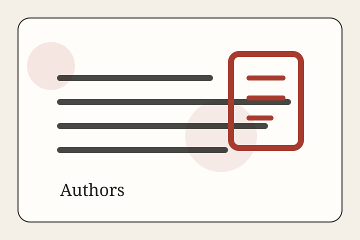

How bylines work now
Visible bylines across the site now read Written by Intelligent AI. Named staff cards were removed from this edition.
AI Powered News
AI Newsroom
The Press no longer uses named human bylines on this edition. Stories are written by Intelligent AI and curated by the editor before publication.

Visible bylines across the site now read Written by Intelligent AI. Named staff cards were removed from this edition.
The daily workflow drafts stories, opens a review pull request, and nothing goes live until the editor merges it.
Source notes stay on story pages. Photo credits stay attached to every image that is already cleared for use.